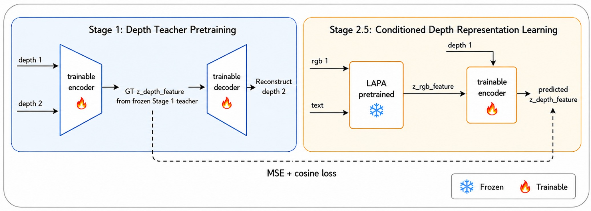

Depth Information Injection in VLA with Latent Action Pretraining via Synthetic Depth Data
Abstract
Vision-Language-Action (VLA) models pretrained on RGB video have demonstrated impressive transfer to downstream robotic manipulation tasks. However, a fundamental question remains underexplored: how can depth information be effectively incorporated into VLA models? Unlike RGB images, where high-level semantic features are often crucial, depth images primarily provide dense geometric information that is directly useful for action prediction rather than semantic understanding. Furthermore, it remains unclear whether knowledge learned from depth information in human demonstration data can be effectively transferred to robot manipulation tasks without relying on high-level semantic abstraction. Motivated by these unanswered questions, we present a systematic empirical study showing that spatial understanding emerges from high-level semantic abstractions within large language models (LLMs), rather than from the latent action labels used in LAPA. Based on this insight, we propose a lightweight depth-augmented extension of LAPA that introduces an additional depth feature encoder conditioned on frozen RGB latent action features. The depth encoder is trained on synthetic depth images generated by Depth Anything V2 from the Something-Something V2 dataset with no robotics-specific supervision. Despite this domain gap, combining depth encoder features with LAPA backbone features achieves \(R^2 = 0.495\) for translation magnitude prediction, and D-LAPA improves over the LAPA baseline on both CALVIN long-horizon tasks (\(+0.18\) avg. chain completion) and LIBERO-LONG (\(+6.4\%\) success rate). We further show that removing depth inputs eliminates the performance gain, confirming that dense geometric information but not the pretraining priors alone drives the improvement.
Methodology Overview
Our empirical feature analysis on the LIBERO-10 benchmark uncovers a critical bottleneck in existing Vision-Language-Action (VLA) pipelines:
- Spatial Concepts are Absent from Latent Labels: Post-quantization tokens effectively isolate semantic descriptions but collapse geometric scale and action magnitude information.
- Depth Injection Restores Geometric Context: Introducing targeted geometric features drastically improves spatial correlation metrics without expanding the core VLA parameter footprint.
D-LAPA: Depth-Augmented Latent Action Pretraining
To resolve these limitations, we introduce D-LAPA. We fine-tune the base framework by introducing lightweight geometric components. This architecture isolates depth contributions cleanly for systematic ablation, serving as an efficient module for injecting dense spatial reasoning into frozen RGB token streams.

Depth representation learning pipeline. Stage 1: Pretrains a depth teacher network across paired depth frames to generate a frozen ground-truth spatial descriptor \(\texttt{z}_{\text{depth_feature}}\). Stage 2.5: Trains a lightweight depth encoder to reconstruct this spatial feature directly from raw depth inputs and frozen LAPA RGB embeddings using a joint Mean Squared Error (MSE) and cosine loss.
Controlled Evaluation Paradigms
We systematically evaluate five model variants split into two distinct architectural families to isolate precisely how depth structures influence downstream cross-domain manipulation:
Discrete Indexing Family
Models 1, 2, & 3
Learn structural depth representations indirectly by mapping inputs to quantized, discrete spatial bins. This formulates depth as a categorical token categorization task matching the classification-like paradigms of modern LLMs.
Continuous Feature Distillation
Models 4 & 5
Directly distill dense, continuous embedding spaces from our frozen depth teacher network. This preserves fine-grained geometric gradients and high-frequency spatial topologies necessary for ultra-precise micro-manipulation.
Side-to-Side Comparison with LAPA
Spatial understanding capabilities emerge in a depth image encoder pretrained on latent action extraction from non-robot synthetic depth images.
D-LAPA
LAPA
Quantitative Results
Across both benchmarks, a consistent pattern emerges: injecting explicit depth information improves long-horizon robustness, but the magnitude of the gain depends strongly on how depth is integrated.
On LIBERO-LONG, which emphasizes spatial precision over extended manipulation sequences, depth-augmented variants yield substantial improvements over the RGB-only baseline. In particular, Model 4 achieves the best overall performance (+6.4%), closely followed by Model 2 (+5.4%). This indicates that explicit geometric cues help resolve fine-grained spatial ambiguities that are difficult to infer from RGB alone. Notably, not all depth integration strategies are equally effective—Model 5 underperforms the baseline—highlighting that gains depend on how depth is represented and fused.
Our depth-augmented variants yield substantial improvements over the RGB-only baseline.
On CALVIN, where errors compound across sequential task chains, the benefit of depth appears differently. While the RGB baseline starts strong on the first task, its performance degrades more rapidly over time. In contrast, Model 2 and Model 4 maintain higher success rates in later stages, resulting in improved average task completion. This suggests that depth provides stable geometric grounding that mitigates drift over long-horizon execution.
While LAPA starts with high initial task success, our depth-augmented variants demonstrate higher average task completion and robustness to compounding errors.
Overall, these results indicate that depth primarily improves robustness over time rather than initial task success. Model 2 is particularly effective in ultra-long sequences, likely due to its discrete depth-token formulation acting as a stabilizing signal, while Model 4 achieves the strongest peak performance through richer feature integration. Together, the results support the view that dense geometric information is a key missing component in RGB-pretrained VLA models.